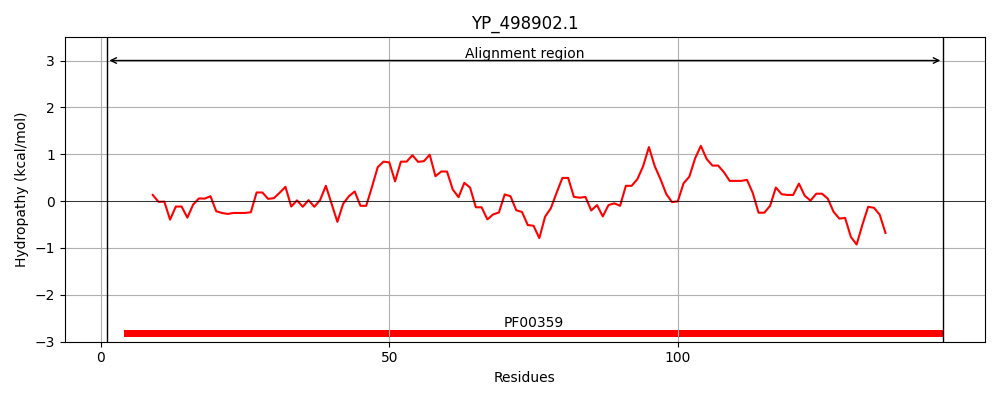
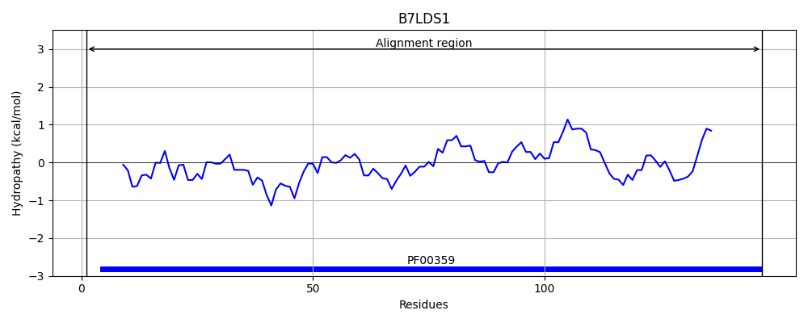
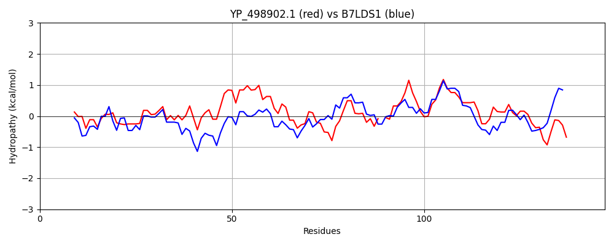

Hit Accession: B7LDS1
Hit TCID: 4.A.7.1.2
Hit Description: gnl|BL_ORD_ID|2035 gnl|TC-DB|B7LDS1|4.A.7.1.2 Putative PTS system, specific IIA component OS=Escherichia coli (strain 55989 / EAEC) GN=vpeA PE=4 SV=1
Mach Len: 147
e:0.000000
Query TMS Count : 0
Hit TMS Count: 0
TMS-Overlap Score: 0.000000
Predicted Substrates:None
BLAST Alignment:
Score: 243 , Bit scores: 98 bits, E-value: 4.5e-27, Alignment length: 147, Percentage identity: 35
Query: 1 MSLDILSTTRIIVKEQVNDWTEAITIASQPLLQEQIIEQGYVQAMIDSVNELGPYIVIAPEIAIAHARPNNDVHQVGLSLLKLNQHVAF-CDEDHYASLIFVLSAIDNHSHLSVLQNLATVLGDNQTVQQLLTATNAQDIKNILKEH 146
M ++L+T + V EQ DW EA+ I+ +PL++ IE YV A+ S + +GPY V+ P IA+ HARP +++ L+L + V F DE+ L+ VL+A D+ SH+ + LA + + + +Q +L A QDI +++ +
Sbjct: 1 MLKNLLNTEVVQVVEQAKDWREAVAISCRPLIENGSIEPRYVDAIYRSHDTIGPYYVVGPGIAMPHARPEEGANKLSLALTLIPSGVNFDADENDPVKLLIVLAATDSTSHIEAISQLAKLFDNEKDIQAILMAKTTQDILSVIARY 147 | Protein Hydropathy Plots: |
|---|
|  |  |
Pairwise Alignment-Hydropathy Plot:
|
|---|
|  |